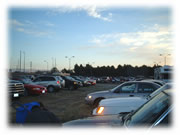
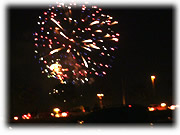
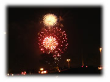

| ..*..*.. 2002年7月5日(金) 晴れ ..*..*.. 昨日は独立記念日。独立記念日の日には花火があちこちであがります。 おととしはShorelineで、去年はうちの近くからGreat Americaの花火を見ました。7月とはいえ、夜は冷え込みます。どちらも暖かく防寒して見ていました。 そして、今年も去年と同じ Great America の花火を見ることにしました。今年はもう少し近くで見たいと思って、いいスポットを探してみました。Great Americaというのはこの辺ではちょっと大きな遊園地で、本当は入場券を払って中に入って花火を見ようかとも思ったのですが、わりと早くに駐車場は閉鎖してしまっていました。 10時過ぎの花火を見るために、夕方6時に家を出て、トゴスというサンドイッチを売っているお店で夕食を買い、ここで近くのゴルフ場の駐車場が空いていることを教えてもらったので、行ってみるとまだ空いていたので、そこに車を停めて、花火を待つことにしました。 ミニで行ったのですが、車の中で待つのは快適でした。車の中でゆっくりサンドイッチを食べ、音楽を聴いたり、DVDを見たり、雑誌を読んだりして、時間がくるのを待っていました。写真のように早くから車がたくさん停まっていて、それぞれ花火を待っていました。 私たちの隣の車はトラックで来ていた夫婦で、荷台に椅子を出して早くからそこに座って待っていました。こんなに寒いんだから、車の中で待ってればいいのに、と思ったのですが。彼等は特に何をすることもなく待っていて、途中、食べていたものは奥さんが作ったらしいポテトサラダ。なんだか、車といい、待ち方といい、典型的なアメリカ人を見た思いでした(^^;。（って観察してる私も私ですが(^^;） 花火はとてもきれいでした。そこからの眺めもよく、暖かい車内で見ることができ、とっても満足。 花火が終わってから、個人用飛行機が旋回していたのですが、よく見ると文字が。宣伝飛行機でした。住所と名前が映し出されていました。 さて、終わったのは10時半前だったのに、ものすごく混んでいて、普段なら10分で帰れるところが、家に着いたのは12時過ぎでした。 今日は仕事が普通にあったんだけど、ゆうべ夜遅くに寝たので、とても眠かったです(-o-)。oO...zzz |